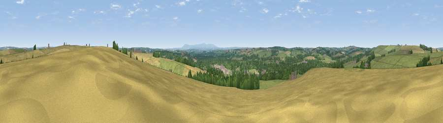

Viewpoint near Merton
#15220 in England · top 25% of its area beats it · near Merton · access?Where it is
The exact computed spot (SS 51825 13125). Click the marker for map links.
Public access: no public right of way or access land is recorded at this exact spot — it may be on private land. Computed from Natural England's CRoW access layer and OpenStreetMap rights of way — not the legal definitive map. Always verify locally.
The view, rendered

A 360° render of this exact spot computed from the terrain model, tree cover and land cover — summer colours, afternoon light, calibrated against photographs of famous viewpoints. Real trees, hedges and buildings will differ in detail.
The panorama
Grey silhouette: terrain skyline in each direction (720 bearings, Earth curvature and refraction included). Dashed green: skyline with trees (+15 m) and buildings (+8 m) as obstacles. Blue strip: how far the ground is visible on each bearing.
Where the view opens
Wedge length = distance to the farthest visible ground on that bearing (vegetation-aware). Rings at 10, 25 and 50 km.
What fills the view
46% grassland · 32% cropland · 20% woodland · 1% built-up ·
Angular shares of the visible panorama (visual magnitude), not map area. Landscape diversity 0.50 (0–1 Shannon).
Key numbers
More beautiful places nearby
The staircase of upgrades: each row has a higher view potential than everything closer. Driving times are estimates from straight-line distance, calibrated against real road routing — check an actual route before setting out.
| Place | Direction | Drive | Score |
|---|---|---|---|
| Viewpoint near Little Torrington | NNW · 2 km | ~5 min | 59.1 |
| Viewpoint near Little Torrington | NW · 2 km | ~5 min | 59.7 |
| Viewpoint near Little Torrington | NW · 4 km | ~8 min | 62.8 |
| Viewpoint near Petrockstowe | SSW · 5 km | ~11 min | 65.5 |
| Viewpoint near High Bullen | N · 8 km | ~17 min | 71.2 |
| Viewpoint near Alverdiscott | NNW · 13 km | ~23 min | 71.7 |
| Viewpoint near Bideford | NNW · 13 km | ~24 min | 73.5 |
| Babbacombe Hill | NW · 17 km | ~30 min | 78.7 |
50.89854, -4.10848 · source: screening · position refined by local search. Computed location — check access rights before visiting.